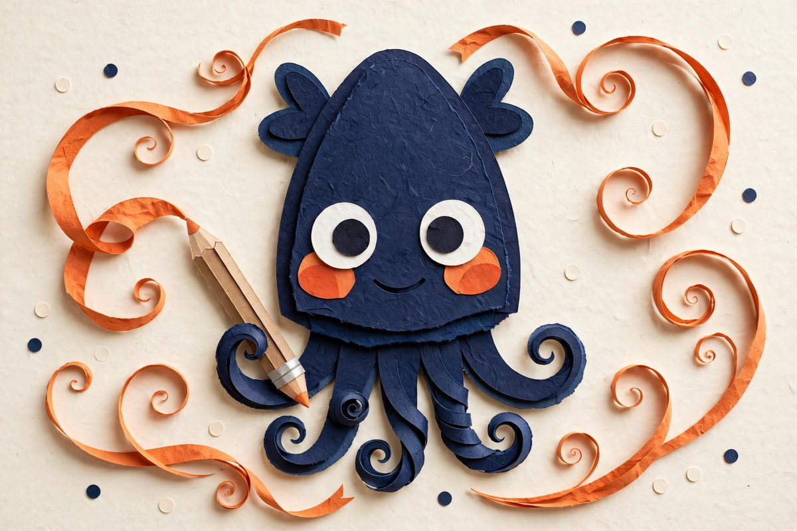
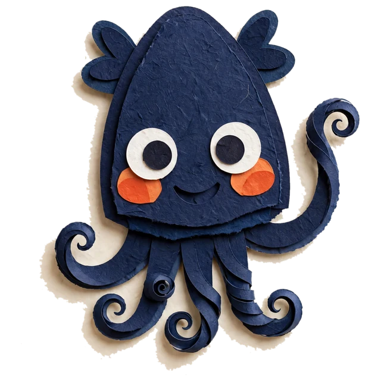
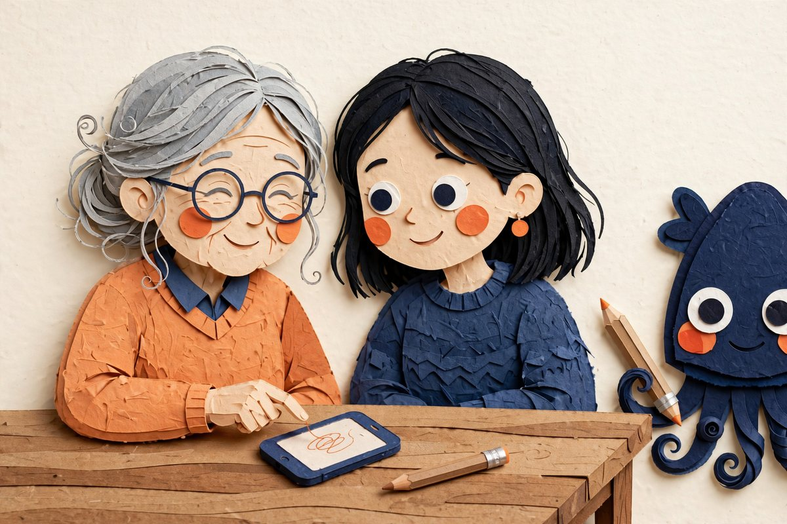
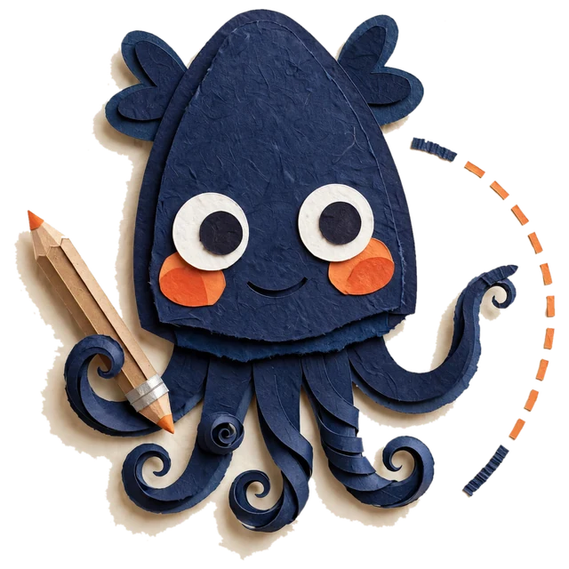
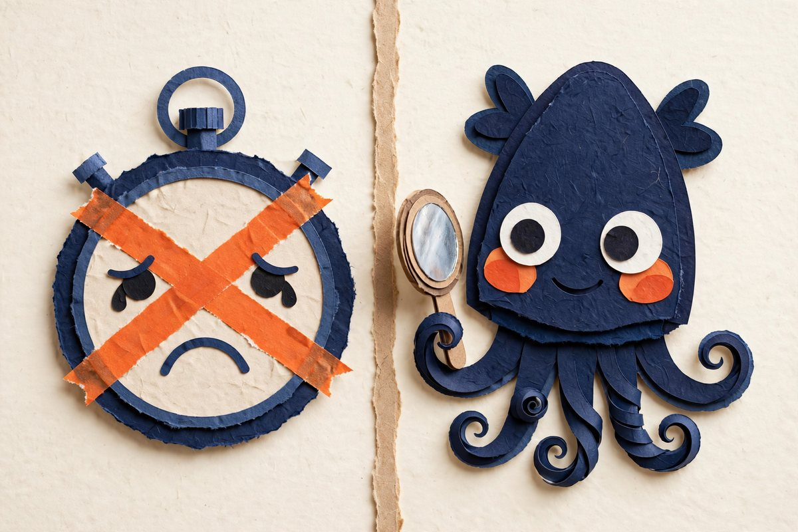
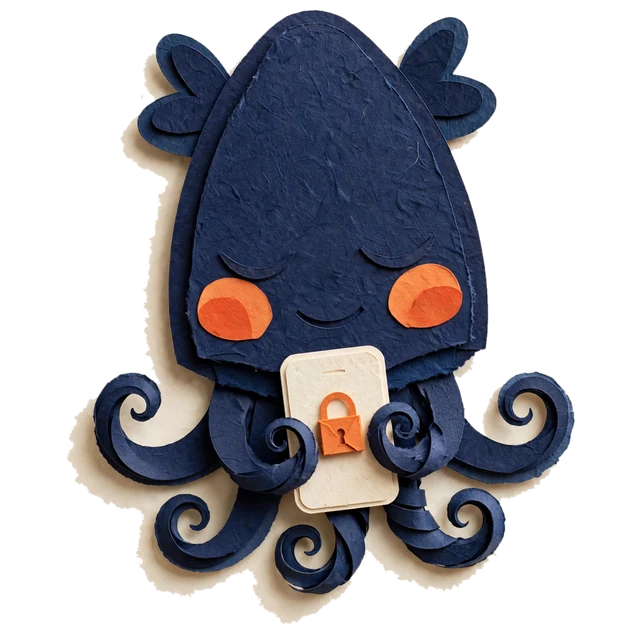
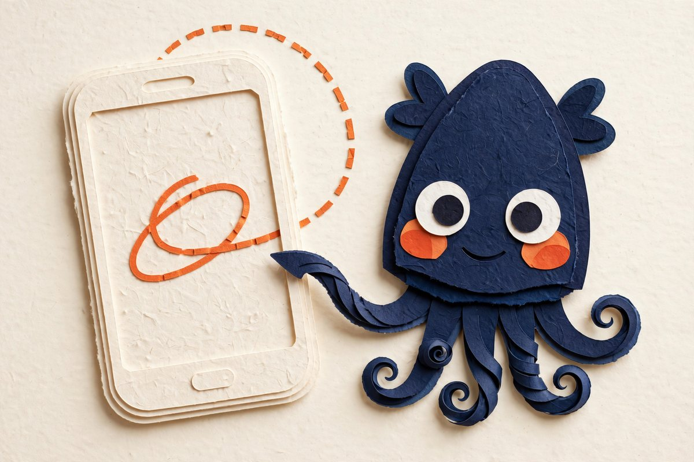
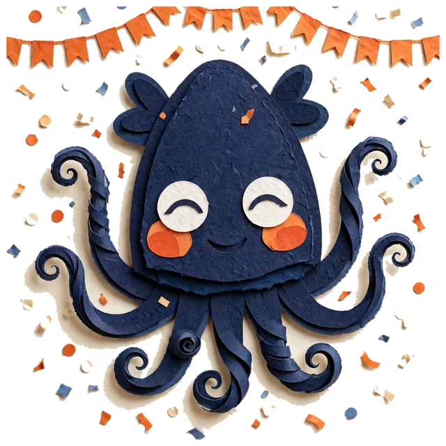
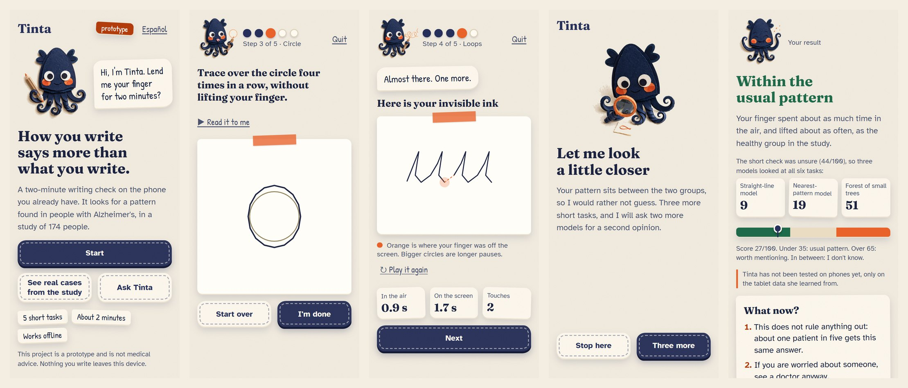
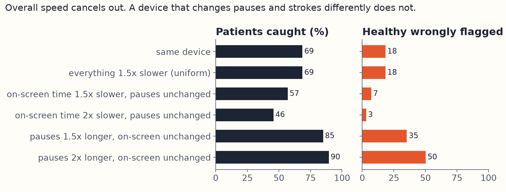

The invisible ink
that paper hides.
A two-minute writing check on a phone, for families worried about memory.



She repeats questions. Last week she left the stove on.
Normal forgetfulness, or time to see a doctor?
Paper hides it. A touchscreen can time it.
From the DARWIN study: 174 people writing on a tablet (Cilia et al., 2022)

Airplane mode on: nothing leaves the phone.
"house" written backwards, a circle traced four times, joined-up "le" loops.
Share of the time the finger is in the air.
Number of touch-downs.
Trained on DARWIN: 174 people (89 with Alzheimer's, 85 healthy) · logistic regression, then SVM + random forest for a closer look · runs on the phone
Slower device simulated on the study data.

Tinta measures proportions, not speed.
Python, scikit-learn, pandas · nested cross-validation
React + TypeScript · offline web app · Android
Model runs in the phone; tests match Python to 0.00005
Claude Code: planning, coding, playing testers. I checked every result.

Tested on 15 healthy volunteers on real phones, all under 60. Next: people over 65 and diagnosed patients, then relearn the thresholds from finger data.

It doesn't replace a doctor.
It helps people go to one.
When I don't know, I say so.
Thank you!


| Cut at 50 on the scale | Accuracy | Patients caught | Healthy flagged |
|---|---|---|---|
| Stopwatch rule, 3 tasks | 80% | 78% | 19% |
| Air share alone, 3 tasks | 75% | 75% | 25% |
| Tinta, short check | 74% | 70% | 21% |
| Tinta, adaptive (4.0 tasks) | 77% | 74% | 19% |
| What people are told | Usual | Can't tell | Mention |
|---|---|---|---|
| Of 100 patients | 19 | 15 | 65 |
| Of 100 healthy people | 74 | 13 | 14 |

With all 25 study tasks a trained model reaches 91% (stopwatch 81%), but 25 tasks is not realistic on a phone. Slow healthy writers: 35% flagged vs 15–18% of others.